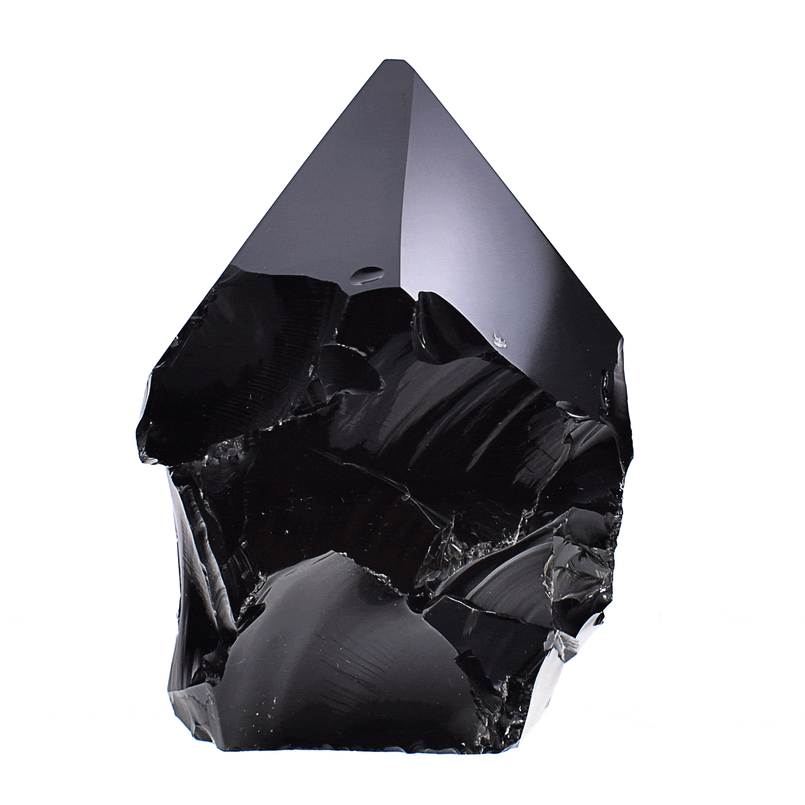
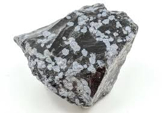
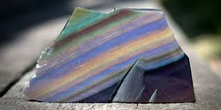
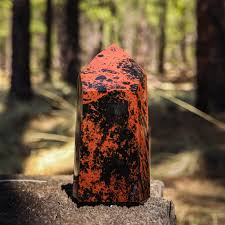
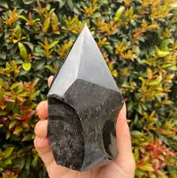
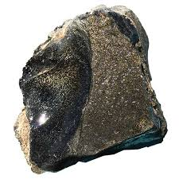
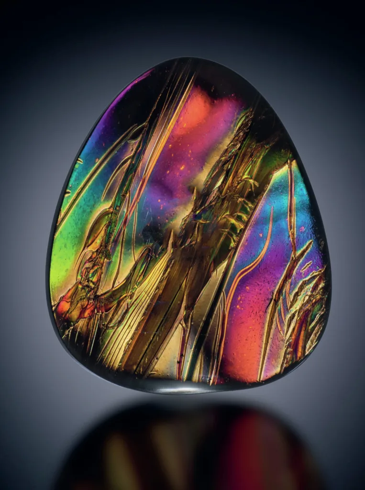

Assalamu`alaikum saya Hasan saya akan menyampaikan tugas riset saya kali ini adalah batu Obsidian
walaupun di web riset yang sebelum nya saya sudah memberikan tentang Obsidian tapi tidak terlalu lengkap
maka
saya
akan menampilkanya di sini
Obsidian adalah jenis kaca vulkanik yang terbentuk dari lava yang mendingin dengan sangat cepat,
sehingga tidak sempat membentuk kristal. Selain sebagai kaca alami, obsidian memiliki variasi
berdasarkan komposisi kimianya dan kondisi pembentukannya. Berikut adalah beberapa jenis obsidian yang
dikenal:
Jenis-Jenis Obsidian
Obsidian Hitam (Black Obsidian)
Ini adalah jenis obsidian yang paling umum,
berwarna hitam pekat. Obsidian hitam sering
digunakan dalam pembuatan alat dan senjata di
zaman prasejarah, serta dalam perhiasan dan
artefak budaya.
Ini adalah Foto Black Obsidian

Obsidian Salju (Snowflake Obsidian)
Mengandung inklusi kristal kecil yang disebut
spherulites, yang memberikan tampilan bercak-
bercak putih mirip dengan salju. Inklusi ini
terbentuk dari mineral cristobalite.
Ini adalah Foto Snowflake Obsidian

Obsidian Pelangi (Rainbow Obsidian)
Memiliki kilauan warna-warni yang muncul ketika
dipotong dan dipoles dengan cara tertentu.
Warna-warna ini disebabkan oleh mikroskopis
lapisan tipis mineral yang memantulkan cahaya.
Ini adalah Foto Rainbow Obsidian

Obsidian Mahoni (Mahogany Obsidian)
Obsidian ini memiliki pola berwarna cokelat
kemerahan yang menyerupai kayu mahoni. Pola
ini biasanya terbentuk karena adanya inklusi
mineral besi.
Ini adalah Foto Mahogany Obsidian

Obsidian Perak (Silver Sheen Obsidian)
Menampilkan kilauan perak yang lembut ketika
dipoles. Kilauan ini dihasilkan oleh inklus
mineral yang memantulkan cahaya.
Ini adalah Foto Silver Sheen Obsidian

Obsidian Emas (Gold Sheen Obsidian)
Mirip dengan obsidian perak, tetapi memiliki
kilauan emas yang lebih menonjol. Warna ini
juga dihasilkan oleh inklusi mineral tertentu.
Ini adalah Foto Gold Sheen Obsidian

Obsidian Api (Fire Obsidian)
Menunjukkan spektrum warna yang sangat cerah,
seperti merah, oranye, dan kuning. Kilauan warna
ini disebabkan oleh lapisan tipis dari mineral
hematit.
Ini adalah Foto Fire Obsidian

Penggunaan Obsidian
Obsidian telah digunakan sejak zaman prasejarah untuk membuat alat
seperti pisau, mata panah, dan cermin. Saat ini, obsidian juga sering
digunakan dalam perhiasan dan seni pahat karena keindahan dan kilauan
yang dimilikinya. Di dunia modern, obsidian kadang-kadang digunakan
dalam pembuatan pisau dan pisau bedah karena tepinya yang sangat tajam.
Berikut foto pisau yang terbuat dari obsidian
Berikut foto pisau bedah dari obsidian
Ayo uji seberapa jauh pengetahuanmu tentang Batu Obsidian
Hubungi saya
Terima kasih banyak!
Kami berhasil menerima pesan Anda.
Oops!
Sekadar pemberitahuan: Pesan Anda tidak berhasil dikirim.